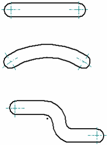
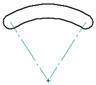

Centerline and Center Mark Options dialog box
Specifies element options for adding or removing automatic centerlines and center marks in the drawing view.
- Center Lines
-
- Full cylinders
-
Specifies that centerlines are placed automatically on full cylinders in the drawing view.
- Partial cylinders
-
Specifies that centerlines are placed automatically on partial cylinders in the drawing view.
- Use search range
-
Specifies that centerlines are placed automatically on full cylinders and partial cylinders that fall between the specified minimum and maximum radii in the drawing view.
- Minimum
-
Specifies the minimum radius for cylinders in the search range.
- Maximum
-
Specifies the maximum radius for cylinders in the search range.
- Center Marks
-
- Arc
-
Specifies that center marks are placed automatically on arcs in the drawing view.
- Ellipse
-
Specifies that center marks are placed automatically on ellipses in the drawing view.
- Circle
-
Specifies that center marks are placed automatically on circles in the drawing view.
- Partial ellipses
-
Specifies that center marks are placed automatically on partial ellipses in the drawing view.
- Use search range
-
Specifies that center marks are placed automatically on elements that fall between the specified minimum and maximum radii in the drawing view.
- Minimum
-
Specifies the minimum radius for elements in the search range.
- Maximum
-
Specifies the maximum radius for elements in the search range.
- Slot Center Lines and Center Marks
-
When slots are shown in drawing views, the following options specify the annotation geometry to display automatically. Select as many of the options as needed to produce the desired annotation.
These options take precedence over the geometry options listed above.
- Centerlines
-
Specifies that centerlines are placed automatically on slots. This option works for all types of slots.
- Strike point center marks
-
Specifies that strike (punch) point center marks are placed automatically on the geometric center of the slot centerline. This option works for all types of slots.

- End point center marks
-
Specifies that end point center marks are placed automatically at the arc ends of slots.

- Center of arc projection lines
-
Specifies that projection lines are placed automatically at the centers of arcs on slots.
This option applies to slots that have a single curve and arc ends, as shown below.
Example:
How do I
Automatically create centerlines and center marks in a drawing viewAutomatically remove centerlines and center marks from a drawing view
Place a center mark
Place a centerline midway between two lines
Place a centerline on a slot
Place a center axis on a cylinder or hole feature
Example: Dimension a curved slot
Place a bolt hole circle
Learn more
Centerlines, center marks, and bolt hole circlesLook up more details
Automatic Centerlines commandAutomatic Centerlines command bar
Center Mark command
Center Mark command bar
Centerline command
Centerline command bar
Center Line and Center Mark Properties dialog box
Bolt Hole Circle command
Bolt Hole Circle command bar
Bolt Hole Circle Properties dialog box